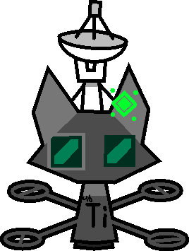

Titanium-46 (46Ti, Athena, TI-2E, DS-001 "Athena") is a stable isotope of Titanium. She looks like her baseline sister, but is tinted dark grey, along with hosting a large communication antenna.
Titanium-46 usually hides from anything not part of the Beacon Coalition.
Minerva was presumably constructed by Zephyrus in order to explore the Felidus Existential Network. Somehow, Minerva instead fell into the Cattoverse, the supposed origin of the FEN.

| Symbol | 46Ti |
|---|---|
| Gender | female |
| Atomic Number | 46 |
| Atomic Mass | 45.9526 |
| Group | Transition metal |
| Discoverer | Sentinel-II |
| Tags | #Titanium-46 |
| Role | Scout, Analyser |
| Status | Active |